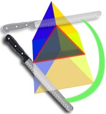
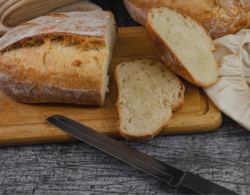

Cross Sections
A cross section is the shape we get when cutting straight through an object.

The cross section of this prism is a triangle
It's like viewing the inside of something by cutting through it.
A cross section of a piece of celery.

Example: Sliced Loaf of Bread
When we slice a loaf of bread, each slice forms a cross section of the loaf at that location.
The shape of the slice depends on how we cut it.
A cross section is just the flat, 2D face of the cut (it has zero thickness). An actual slice of bread is 3D because it has thickness.
Geometry
In geometry it is the shape made when a solid is cut through by a plane.

We don't draw the rest of the object, just the shape made when we cut through.

Cross sections are usually parallel to the base like above, but can be in any direction.
Example:

The vertical cross section through the center of this torus is two circles!

And the horizontal cross section is an annulus
It depends how we slice it!
Example: depending on the angle of our cut, we can slice a cube to get:
- A triangle (by cutting off a corner)
- A square (cutting parallel to a side)
- A rectangle (by cutting diagonally)
- Or a hexagon (by cutting through all six faces at a clever angle)!


More Examples of Cross Sections
| |
|
| Square Prism: | Cross Section: |
 |
 |
| |
|
| Cube: | Cross Section: |
 |
|
| |
|
| Pentagonal Prism: | Cross Section: |
 |
 |
| |
|